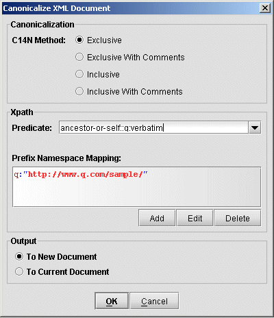

Exchanger XML Editor supports Inclusive and Exclusive canonicalization of documents according to the W3C Canonicalization specifications.
The following list contains a summary of the possible changes the input document undergoes during Inclusive Canonicalization:
The document is encoded in UTF-8
Line breaks are normalized to #xA
Attribute values are normalized (Character and parsed entity references are replaced; White space characters (#xD, #xA, #x9) are replaced by the space character #x20; If the attribute type is not CDATA, any leading and trailing space (#x20) characters are discarded, and any sequences of space (#x20) characters are replaced by a single space (#x20) character.) All attributes for which no declaration has been read should be treated by a non-validating processor as if declared CDATA. Note: a validating parser will produce different output to one that just checks well-formedness since leading/trailing spaces are discarded and sequences of spaces are collapsed for non-CDATA atrributes by the validating parser - the canonicalisation spec requires that attribute values are normalized "as if by a validating processor".
Character and parsed entity references in content are replaced
The XML declaration is removed
Whitespace outside of the document element is normalized
All whitespace in character content is retained (excluding characters removed during line feed normalization)
Default attributes are added to each element
A DOCUMENT_TYPE node is discarded.
Processing Instructions (PIs) before the document element are output followed by a new line each. PIs after the document element are output preceeded by a new line each. PIs are output with a single space between the target name and the value, if there is a value otherwise no space is output. The character #x0d is replaced by the character entity
Comments before the document element are output followed by a new line. Comments after the document element are output preceeded by a new line. The character #x0d is replaced by the character entity
Text and CDATA nodes are output as text, with special characters replaced by character references: & replaced by & < replaced by < > replaced by > and the character #x0d is replaced by the character entity 
Empty elements are converted to start-end tag pairs.
Whitespace within start and end tags is normalized.
Attribute value delimiters are set to quotation marks (double quotes)
Special characters in attribute values are replaced by character references: & replaced by & < replaced by < > replaced by > and the character #x0d is replaced by the character entity 
Relative namespaces are not allowed and will cause the canonicalization to fail.
Namespaces and attributes: any superfluous redeclaration of namespaces or xml: attributes are dropped from the output - for example, if an element has an xml:space="preserve" and an ancestor has the same declaration without an intervening xml:space="default", then the xml:space attribute is dropped from the current element (and similarly for redeclared namespaces).
Namespace and attribute ordering: namespaces are output before attributes. Namespaces are ordered based on the local name (prefix), with the default namespace, if it exists, being placed last because it has no local name. Attributes are ordered based on the namespace URI (not prefix!) as the primary key and the local name as the secondary key, with attributes in no namespace being placed last (remember, default namespace does not apply to attributes).
Open the file input/books.xml in the Inclusive Canonicalization project and select Security->Canonicalize. In the dialog, select Inclusive, send the output To New Document and click OK. This example shows up a number of canonicalization features, including entity and CDATA replacement, double quotes replacing single quotes around attribute values, attributes being ordered alphabetically, XML Declaration and DOCTYPE stripping, etc.
XPaths can also be used to specify what portion of a document is to be canonicalized. Note that an XPath such as //person only identifies individual nodes (the apex nodes of subtrees starting at the person elements), whereas a construction similar to (//. | //@* | //namespace::*)[ancestor-or-self::person] is needed to describe the list of nodes contained within the person elements (for more details, see the Canonicalization specification). When using XPaths in Exchanger for Canonicalization or XML Signatures, you only need to enter the predicate, i.e. the part inside the square brackets [] which in the current example is ancestor-or-self::person.
If you need to use namespace prefixes in your XPath predicates in Canonicalization, then you must declare them to the Editor either in the Canonicalize dialog or through the XML Preferences window (available via File->Preferences in the XML tab). See the section on using XPaths in Exchanger at the beginning of this document and the Preferences section at the end for more details on using namespace prefix mapping.
Exclusive canonicalization deals with the canonicalization of document subsets and attempts to isolate the subset from its context - this is very important when content of one XML document type is embedded (or "enveloped") within another document type such as SOAP. Exclusive canonicalization adds extra restrictions, above and beyond the regular canonicalization issues outlined above.
Visibly utilized namespaces: Namespaces are not automatically output on an element unless they are actually used on the element itself - this holds both for namespaces delared on ancestor elements and also for those declared on the element itself. If an unused namespace is used on a subsequent descendant, the appropriate namespace declaration is only output at that point.
Included namespaces: specific namespace declarations can be explicitly output by supplying them to the exclusive canonicalization algorithm in the InclusiveNamespaces PrefixList. This is useful when a prefix is used in an attribute value (say, as part of an XPath specification) and would not be "visibly used" by default.
xml: attributes that have been used on ancestors that are not part of the document subset are NOT output on the apex nodes of the document subset.
Open the file input/xc14ntest.xml in the Exclusive Canonicalization project and select Security->Canonicalize. In this example, we are going to exclusively canonicalize the verbatim element contents and see how the namespaces are affected. In the dialog, select Exclusive and set the XPath Predicate to ancestor-or-self::q:verbatim. (Note: you will need to add a Namespace Prefix Mapping entry with Prefix equals to q and URI equals http://www.q.com/sample/ and send the output To New Document.
Figure 1. Exclusive Canonicalization
In the output (also available in the output directory in the project) notice how namespace declarations are only output when needed. Also note that while the w prefix is used in an attribute value on the b element, the namespace declartion is not output on the b element as the namepsace is not "visibly used" but is output on the i element where it is visible.